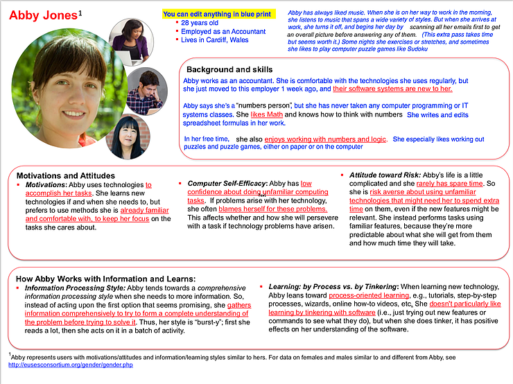

Animal World
Creating a social website for animal lovers to create an account, share images of their favorite animals, tag images, and manage photos.
Front-end: HTML, CSS, JavaScript
Back-end: PHP, SQL
Creating a persona for my audience
In creating my persona I chose to use a new method pioneered by HCI (Human-Computer Interaction) researchers known as GenderMag. This project provides personas that represent the most common various information processing styles for users of the web.
For instance, I selected the persona of Abby since I think she represents an important demographic likely to use my animal-lover website: a casual user of technology and a wholistic information processor. By designing for Abby, I will also make the site accessible to the most amount of people as possible, since I will be forced to think about designing a site that is as user friendly and accessible as possible.
Creating the initial Design
I thought this sketch would be great for Abby since it does not overwhelm her with too much information at once, rather it places the emphasis on the animal, with the option to change animals.
The wireframe expands on this idea with a navigation bar that includes a conditional statement, so the only other page for Abby to worry about will be the login/logout. Further, for the animal Abby chooses it shows additional information specific to that animal such as its name and user generated tags for that image.
Planning the Database Schema
Table: gallery
* field 1: image_id - the unique identifier of the photo NOT NULL AUTOINCRIMENT UNIQUE ID
* field 2: image_name - the name of the file of the image (TEXT) NOT NULL
* field 3: image_extension - the file extension of the image (TEXT) NOT NULL
* field 4: tag - The (user created) tag for the image (TEXT) NOT NULL
Implementation in PHP and SQL
Image 1: When an image is clicked, display more information about that image.
This is done by taking the image id from the post request (URL) and creating a SQL query to display information from the database corresponding to the key of that animal.
Image 2: Setting the index page to show the images from the SQL gallery .
This snippet of code includes a "PHP includes" which generates HTML code that is consistent across multiple pages, in this case code corresponding to reading the database. The code also includes opening the SQL database so that the rest of the index PHP code can read from the database, and a init SQL database call. What this means is that if there is no existing database the webpage automatically generates a new one.
Image 3: Implementing SQL schema into code that generates a image gallery.
This code snippet creates a gallery table which provides keys for each image that will be in the database, as well as attributes about that image such as its file extension, the URL source, the user who uploaded, etc.